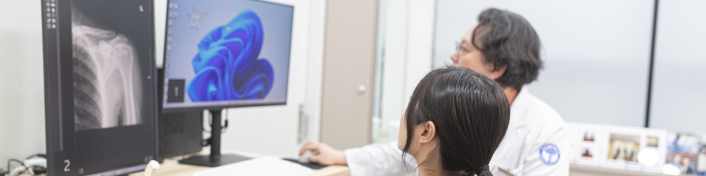

신경성형술이란?
신경성형술은 경피적 경막외 유착박리술이라고도 하며 가느다란 특수 카테터를 경막외 공간으로 삽입하는 치료입니다.
카테터를 신경이 눌리거나 유착된 부위까지 이동시켜 유착을 완화하고 염증을 줄이기 위한 약물을 전달합니다.
가는 다관 카테터를 이용해 통증 원인이 되는 부위에 접근하고
신경 주변의 압박과 염증을 줄이기 위한 약물을 전달합니다.
신경성형술은 경피적 경막외 유착박리술이라고도 하며 가느다란 특수 카테터를 경막외 공간으로 삽입하는 치료입니다.
카테터를 신경이 눌리거나 유착된 부위까지 이동시켜 유착을 완화하고 염증을 줄이기 위한 약물을 전달합니다.

통증이 나타나는 위치와 신경의 압박 상태를 함께 확인합니다.
허리 통증과 다리 저림의 원인에 맞춰 시술을 계획합니다.
진찰과 영상검사를 통해 디스크와 협착, 신경 주변의 염증 및 유착 가능성을 확인합니다.
영상장비로 카테터의 위치를 확인하면서 통증의 원인이 되는 신경 주변으로 접근합니다.
시술 후 감각과 움직임, 통증 변화를 확인하고 상태에 맞는 생활 관리 방법을 안내합니다.
통증·저림이 반복되거나 일상생활의 불편함이 이어진다면
검사를 통해 신경 상태를 확인하고 시술 여부를 고려할 수 있습니다.
시술 당일 허리 굽힘·비틀기와 안내 기간 내 무거운 물건 들기는 피하세요.
저림·뻐근함은 경과를 살피고, 통증 악화·발열·근력 저하·배뇨·배변 변화 시 진료받으세요.